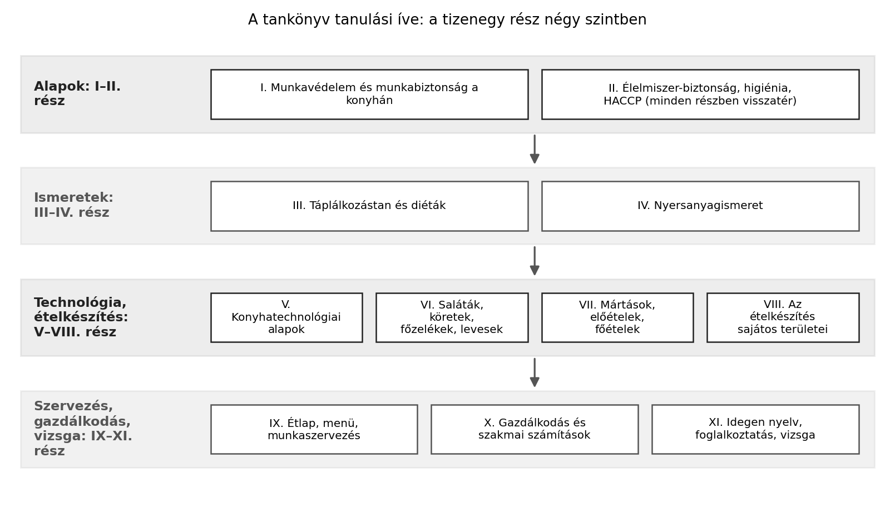
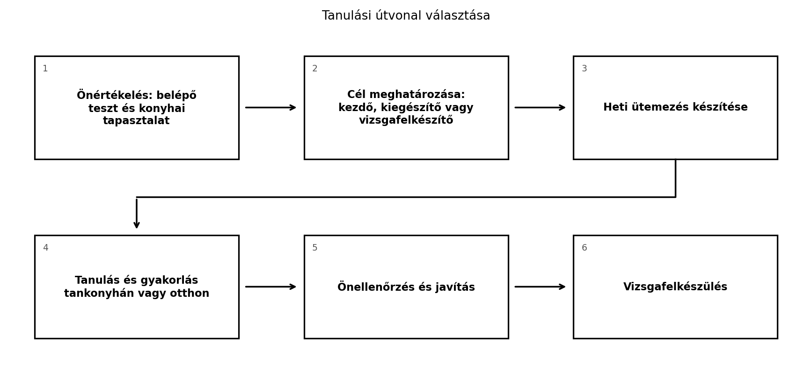
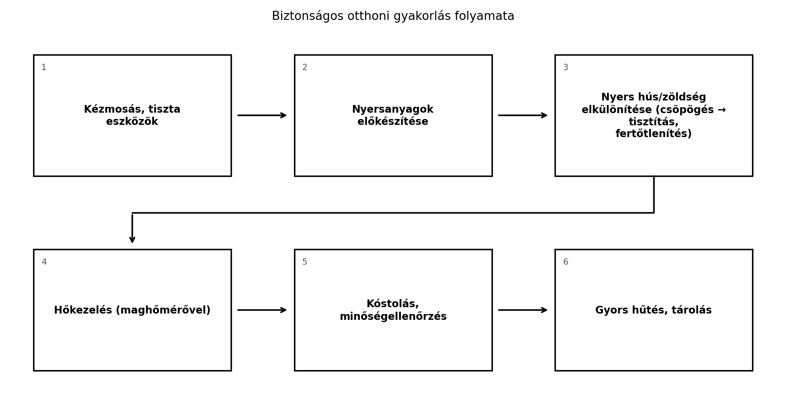
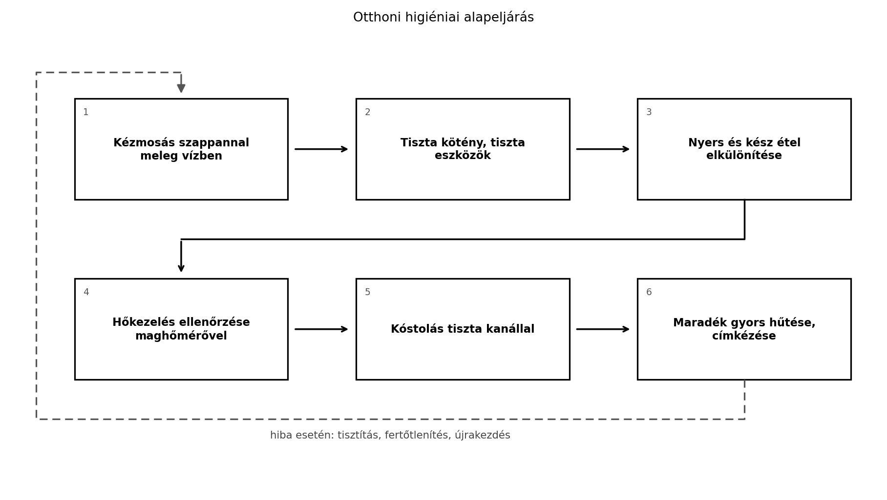

Egy friss szakácstanuló reggel hatkor belép a tankonyhába. A pulton láda friss zöldség, a hűtőben előkészített hús, a tűzhelyen már forr az alaplé. A séf azt kéri: készítsd elő a zöldségeket a napi menühöz, és közben figyelj a hűtési rendre. Mit jelent pontosan az előkészítés? Miért fontos a hűtési rend a HACCP szerint? Mi alapján döntöd el, hogy a sárgarépát vékony csíkra vágod, vagy a húst később szeleteled? A szakács szakma nem csupán receptek ismerete. A munkád egy láncolat: a nyersanyag átvételétől a kész étel tányérra helyezéséig minden lépésnek rendszere, szabálya és dokumentációja van.
Ez a könyv ezt a láncolatot tanítja meg lépésről lépésre. Nem azt várja, hogy magolj: azt várja, hogy értsd a folyamatokat, és a munkahelyi döntéseidet biztonságosan meghozd. A fejezet bemutatja, mit vár el a munkaerőpiac és a képzés a szakácstól, és hogyan illeszkednek ehhez a tankönyv részei.
Képzeld el egy étterem konyháját délelőtt. A szakács átveszi a friss árut, ellenőrzi a hőmérsékletét, és azonnal beteszi a hűtőbe. Közben a konyhafőnök megbeszéli a napi menüt. A szakács előkészíti a zöldségeket: mosás, pucolás, darabolás. A húsokat megtisztítja, adagokra vágja, a csontból alaplevet tesz fel. Ebéd előtt levesek és főételek főnek, a sütőben pecsenyék sülnek, a pultnál a köretek készülnek. Rendeléskor a szakács a már előkészített alapanyagokból összeállítja a tányért, megnézi a maghőmérsékletet, betartja a tálalási sorrendet. Ebéd után a maradékot gyorsan visszahűti, a hulladékot szétválasztja, a felületeket tisztítja. Délután leltároz, rendelést ad le, és átnézi a holnapi előkészítő listát.
Ebből a napból látszik: a szakács egyszerre dolgozik nyersanyaggal, géppel, hővel, idővel, pénzzel és emberekkel. A szakma Ezekből a szakma öt munkaterülete áll össze: előkészítés, ételkészítés, tálalás, gazdálkodás, higiénia. Ha ezek közül bármelyik hiányzik vagy hibás, az étel minősége romlik, vagy akár vendégbetegséget okoz.
A szakács nem csak étteremben dolgozik. A vendéglátó-ipar sokféle munkahelyet kínál:
| Munkahely típusa | Példa | Jellemző feladat |
|---|---|---|
| Étterem | à la carte étterem, csárda, bisztró | friss, adagonkénti főzés, szezonális étlap |
| Szálloda | szállodai konyha, room service, reggeliző | nagy tömegű előkészítés, büfé, bankett |
| Közétkeztetés | iskolai, kórházi, üzemi konyha | napi menü, diétás ételek, szigorúan szabályozott adagok |
| Rendezvény | catering, esküvő, konferencia | büfé vagy ültetett menü, logisztika, szállítás |
| Gyorsétterem vagy büfé | kifőzde, street food, food truck | gyors tálalás, egyszerűbb technológia, nagy forgalom |
Definíció. A szakács az a vendéglátó-ipari szakember, aki nyersanyagokat fogad, előkészít, hőkezel, ételt komponál, tálal, valamint a munkáját a higiéniai, gazdálkodási és munkabiztonsági szabályok betartásával, dokumentálásával végzi.
A pályaív a munkahelyen jellemzően így épül fel:
A képzésben tanult szakács ezt a pályaívet alapozza meg: nem várja el senki, hogy az iskola után azonnal konyhafőnök legyél, de azt igen, hogy a fenti öt területet értsd, és a rád bízott reszortban biztonságosan dolgozz.
A magyar szakképzés sokáig az Országos Képzési Jegyzék (OKJ) szerint szerveződött. A régi szakács szakképesítés azonosítója körülbelül 34 811 04 volt (ellenőrizendő: a pontos kód). Ma a szakképzésről szóló 2019. évi LXXX. törvény szerinti Képzési és kimeneti követelmények (KKK) és Programtantervek (PTT) határozzák meg a szakmai tartalmat. A tankönyv a régi kerettanterv teljes anyagát átveszi, de a jelenlegi szakképzési elvárásokra is figyel. Mivel a képzési kódok, vizsgarészek és óraszámok időben változhatnak, a konkrét azonosítót a kiadás előtt ellenőrizni kell (ellenőrizendő: aktuális szakmajegyzék, KKK, vizsgaszabályzat).
A könyv fejezetei lefedik a szakmai tantárgyak hagyományos rendszerét:
Ezt a szerkezetet a könyv végig expliciten mutatja: minden fejezet elején a tanuló tudja, melyik tantárgyi témához tartozik, és a fejezet végén milyen eredményt visz tovább.
A részek sorrendjét az alábbi ábra mutatja: négy szintbe rendezi a tizenegy részt, felülről lefelé haladva. A felső szint II. része, az élelmiszer-biztonság a könyv minden későbbi fejezetében visszatér – minden technológiánál ott a maghőmérséklet, a hűtés, a keresztszennyeződés és az allergének kérdése.

Az ábra tartalma a fenti listában szövegesen is megvan. Ha egy fejezetnél elakadsz, nézd meg, melyik szinten áll: a hiányzó előismeret mindig egy fölötte lévő szintben található.
Minden alfejezet ugyanazt a tanítási rendet követi, hogy az önálló tanulás kiszámítható legyen. Ez a tanulási szerződés.
Definíció. A tanulási szerződés a tankönyv minden alfejezetére érvényes, állandó felépítés: motiváció, szemléletes kép, pontos definíciók és szabályok, technológia vagy eljárás lépésenként, számítási példa, gyakorlati útmutató vagy technológiai lap, minőségellenőrzés, tipikus hibák, valós eset, önellenőrzés, feladatok, megoldások, rövid összefoglaló, források és ellenőrzési hiányok.
Ez a szerkezet azért fontos, mert a szakácstanuló nem lineárisan, hanem helyzetekből tanul: előbb lát egy konyhai problémát, majd megérti az elvet, gyakorol, hibaelemzést olvas, és végül önmagát ellenőrzi. Így a tudás nem szigetekből áll, hanem folyamatosan kapcsolódik a napi munkához.
Szabály. Az alfejezetek mindig az alábbi sorrendben épülnek fel:
Továbbvitt eredmény. Ezt a tanulási szerződést és a kiemelések jelentését a(z) Tanulási útvonalak, vizsga és önellenőrzés alfejezet használja tovább: ott a tanuló ezek alapján építi fel a saját tanulási ütemtervét, és a vizsgára készül.
A szövegben a fontos tudnivalókat vastagított, címkézett bekezdések emelik ki. Ezt azért tesszük, hogy a tanuló gyorsan felismerje, mi a definíció, mi a higiéniai szabály, mi a technológiai lap, vagy éppen mire kell figyelmeztetni.
A leggyakoribb kiemelések:
Ezek a címkék nem díszítik a szöveget, hanem segítik a keresést. Például ha vizsga előtt gyorsan át akarod nézni az összes higiéniai szabályt, elég a Higiénia. dobozokat átfutni. Ha egy ételt készítesz, a Technológiai lap. megy előre, és a Kritikus pont. mutatja, hol kell mérni.
A könyv a mértékegységeket is egységesen kezeli: tömeget grammban és
kilogrammban adunk, a régi dkg jelölést csak megjegyzésben említjük (1
dkg = 10 g). A hőmérsékletet Celsius-fokban mérjük, az energiát
kilojoule-ban és kilokalóriában. A pénz forintban (Ft) jelenik meg,
képletekben \text{Ft}.
Szabály. A technológiai lap mindig 10 adagra adja meg az anyaghányadot, bruttó tömeggel vagy térfogattal, és feltünteti a kész étel adagsúlyát. Az üzemi receptúra és a hivatalos/üzemi anyaghányad-gyűjtemény a mérvadó; a tankönyvi anyaghányad tanulási példa.
Példa. Ha egy technológiai lap 10 adag rántott sertésszelethez 10 db, egyenként 100 g-os (régi receptben: 10 dkg) karajszeletet ír elő, a hús bruttó tömege 10 adagra 1000 g. A kész, bundázott és kisütött szelet adagsúlya ennél kevesebb vagy hasonló lehet (a bunda növeli, a sütési veszteség csökkenti) – a pontos értéket a saját receptúra adja (ellenőrizendő: a pontos adag a saját receptúrában).
A könyv 11 részre és 42 főfejezetre oszlik, összesen 170 alfejezettel. Ha naponta egy alfejezetet tanulsz meg alaposan, akkor a teljes anyag 170 tanulási nap alatt feldolgozható. Ez nem azt jelenti, hogy minden nap egy egész fejezetet kell befejezni; a gyakorlati órák mellett ez egy reális önálló tanulási ütem.
Számítás. Tegyük fel, hogy egy tanuló hetente 5 napot tud a tankönyvre szánni, és naponta átlagosan 1 alfejezetet dolgoz fel. Kérdés: hány hét alatt ér a végére?
Ez a számítás csak a tankönyvi alfejezetek ütemezésére vonatkozik; a szakmai gyakorlat, a vizsgafelkészülés és az ismétlés ennél több időt igényel. A pontos tanulási tervet a Tanulási útvonalak, vizsga és önellenőrzés alfejezetben építjük fel.
Cél: a tankönyv önálló tanulásra való használatának begyakorlása.
Eszközök és anyagok: a tankönyv jelen fejezete, füzet, toll, színes kiemelő, zsebszámológép.
Biztonsági korlát. Ennél a feladatnál nincs konyhai művelet; a gyakorlat szövegértési és tervezési feladat.
Higiéniai előkészület: nem szükséges; ha tankonyhából tanulsz, tartsd tisztán a tankönyvet és a jegyzetfüzetet.
Lépések:
Ellenőrzési pontok: a táblázatban szerepel a motiváció, a definíció, a technológia, a számítás, a minőségellenőrzés, a hibaelemzés, az önellenőrzés és a megoldások; a tantárgyak hozzárendelése logikus; a mondatod pontosan megfogalmazza, hogy a Szabály. a könyv saját előírása, a Jogszabály. pedig jogforrásból származik, forrással és ellenőrzési jelzéssel.
Dokumentálás: a kész táblázatot és a hozzárendelést tartsd meg a tanulási portfóliódban.
Az alfejezet tudásának ellenőrzése nem érzékszervi, hanem fogalmi. A minőségi tanulás jele:
Hiba 1: A tanuló csak a recepteket olvassa, a higiéniai részeket átugorja. Ok: a recept azonnali sikerélményt ígér; a higiénia unalmasnak tűnik. Következmény: a gyakorlatban a keresztszennyeződés vagy a nem megfelelő maghőmérséklet miatt ételmérgezés lehet. Helyes gyakorlat: mindig a teljes alfejezetet dolgozd fel; a Higiénia. és Kritikus pont. dobozokat soha ne hagyd ki.
Hiba 2: A tanuló nem jegyzetel, csak olvas. Ok: azt hiszi, hogy a szem elolvasása elegendő. Következmény: a vizsgán a fogalmakat nem tudja felidézni, a technológiai sorrendet keveri. Helyes gyakorlat: minden alfejezethez készíts saját vázlatot; a technológiai lapokat másold le, és írd mellé a kritikus pontokat.
Hiba 3: A tanuló a számításokat számológép nélkül, fejben próbálja megoldani. Ok: gyorsabbnak tűnik. Következmény: a tizedesvesszőknél vagy az átváltásnál hibázik, és az egész kalkuláció rossz lesz. Helyes gyakorlat: minden számítási feladatnál írd ki a képletet, a behelyettesítést mértékegységgel, és csak utána számolj géppel.
Egy felnőttképzésben tanuló szakács, András, a vizsga előtt két héttel kezdte el a tankönyvet olvasni. A recepteket gyorsan átnézte, a HACCP-s fejezeteket kihagyta. A gyakorlati vizsgán a vizsgabizottság megkérdezte, mi a kritikus pont a szárnyas hőkezelésénél. András nem tudta megmondani, hogy a maghőmérsékletet a vastagabb részbe kell szúrni, és hogy a szárnyasnál legalább 75 °C maghőmérséklet a legvastagabb részen (tanulási érték, ellenőrizendő: NÉBIH-útmutató / HACCP-terv). A vizsga után a séf elmagyarázta neki: a recepteket a technológiai lapok hordozzák, de a biztonságot a higiéniai ismeretek adják. András újrakezdte a könyvet, ezúttal az elejétől, és minden Higiénia. részt kijegyzetelt. A következő vizsgán már nem volt problémája.
A tanulság: a könyv szerkezete nem véletlen. Aki átugorja a biztonsági részeket, az a szakmában nem boldogul, mert egyetlen hiba elég ahhoz, hogy vendég beteg legyen.
1. Igaz vagy hamis? A szakács munkája csak az étel elkészítéséből áll. 2. Sorold fel a szakács öt fő munkaterületét. 3. Mi a tanulási szerződés első két eleme? 4. Milyen jogszabály határozza meg ma a szakképzés követelményeit? 5. Mit jelent a Technológiai lap. kiemelés? 6. Miért 10 adagra adjuk meg a technológiai lapok anyaghányadát?
Önellenőrzés – válaszok
1. Hamis. A szakács munkája magában foglalja az előkészítést, ételkészítést, tálalást, gazdálkodást és a higiéniát is. 2. Előkészítés, ételkészítés, tálalás, gazdálkodás, higiénia. 3. Motiváció és szemléletes kép. 4. A szakképzésről szóló 2019. évi LXXX. törvény, valamint a KKK és a PTT. 5. Teljes receptúra: 10 adagos anyaghányad-táblázat, lépések, kritikus pontok, allergének, tálalás, minőségi követelmények, hibák, változatok. 6. A hazai gyakorlat és a kerettanterv szerint a 10 adagos anyaghányad a receptúra-számítás alapja; így az adagolás és a kalkuláció egyszerűen átszámítható.
1. feladat (A) Nevezd meg a szakács négy munkahelyét, és mindegyikhez írj egy példát.
2. feladat (A) Sorold fel a tanulási szerződés öt elemét tetszőleges sorrendben.
3. feladat (B) Rendezd sorrendbe a következő alfejezet-elemeket a tanulási szerződés szerint: Valós eset, Önellenőrzés, Definíció, Motiváció, Technológiai lap, Rövid összefoglaló.
4. feladat (B) Párosítsd a könyv részeit a tantárgyakkal: I. rész, II. rész, IV. rész, X. rész. A tantárgyak: Nyersanyagismeret, Munkavédelem, Gazdálkodás és szakmai számítások, Élelmiszer-biztonság.
5. feladat (C) Tervezd meg egy hét tanulási ütemét az alfejezetek alapján. Egy hét alatt öt alfejezetet akarsz feldolgozni. Válaszd ki a részeket úgy, hogy az egyik napra a munkavédelemből, két napra a higiéniából, egy napra a nyersanyagismeretből és egy napra a technológiából kerüljön anyag. Írd le, melyik alfejezeteket választanád a könyvtérkép alapján, és indokold, miért jó ez a sorrend.
6. feladat (D) Hibaelemzés: olvasd el a következő tanulói mondatot, és írd le, mi a hiba benne a tanulási szerződés szempontjából. „Átolvastam a rántott szelet receptjét, és kész is; a higiéniát majd a vizsga előtt megnézem.” Nevezd meg a hibát, az okát, a következményét és a helyes gyakorlatot.
1. feladat (A) Például: étterem (à la carte étterem), szálloda (szállodai konyha), közétkeztetés (iskolai konyha), rendezvény (catering). Más jó válasz is elfogadható.
2. feladat (A) Bármely öt a felsorolt tizennégy elem közül, pl.: motiváció, szemléletes kép, definíciók és szabályok, technológia, számítás.
3. feladat (B) A helyes sorrend: Motiváció, Definíció, Technológiai lap, Valós eset, Önellenőrzés, Rövid összefoglaló.
4. feladat (B) I. rész – Munkavédelem; II. rész – Élelmiszer-biztonság; IV. rész – Nyersanyagismeret; X. rész – Gazdálkodás és szakmai számítások.
5. feladat (C) Példa: hétfő – A munkavédelem rendszere és fogalmai; kedd – Személyi higiénia és egészségügyi alkalmasság; szerda – A HACCP hét alapelve és a veszélyelemzés; csütörtök – Zöldségek; péntek – A hőközlés módjai és a maghőmérséklet. Így öt nap öt alfejezet: 1 munkavédelem, 2 higiénia és élelmiszer-biztonság, 1 nyersanyag, 1 technológia. Indoklás: először a biztonsági alapok, majd a nyersanyagok, végül a technológia; így a későbbi recepteknél már érted a higiéniát és az anyagismeretet.
6. feladat (D) A hiba: a tanuló csak a receptet olvassa, a higiéniai részt elhalasztja. Ok: a recept azonnali használhatóságot ígér, a higiénia elvontnak tűnik. Következmény: a gyakorlatban nem ismeri a keresztszennyeződést, a hőkezelési határokat, ez vendégbetegséghez vezethet. Helyes gyakorlat: a teljes alfejezetet fel kell dolgozni, a Higiénia. és Kritikus pont. elemeket kiemelten jegyzetelni.
A szakács szakma öt fő munkaterületet fog át: előkészítés, ételkészítés, tálalás, gazdálkodás, higiénia. Munkahelyei: étterem, szálloda, közétkeztetés, rendezvény, gyorsétterem vagy büfé. A pályaív a szakácssegédtől a séfhelyettesen át a konyhafőnökig tart. A képzési rendszer a régi OKJ-ből a 2019. évi LXXX. törvény szerinti KKK és PTT keretbe került; a pontos kódokat ellenőrizni kell. A tankönyv tizenegy részben, negyvenkét főfejezetben és 170 alfejezetben fedi le a tantárgyakat. Minden alfejezet ugyanazt a tanulási szerződést követi: motiváció, szemléletes kép, definíciók, technológia, számítás, gyakorlat, minőségellenőrzés, hibák, valós eset, önellenőrzés, feladatok, megoldások, összefoglaló, források. A kiemelések (Definíció, Szabály, Jogszabály, Higiénia, Allergén, Kritikus pont, Technológiai lap, Tilos, Biztonsági korlát stb.) gyorskeresést és fókuszt adnak. A technológiai lapok 10 adagra adnak anyaghányadot, bruttó tömeggel. Továbbvitt eredmény: a tanulási szerződés és a kiemelések jelentését a Tanulási útvonalak, vizsga és önellenőrzés alfejezet használja fel a tanulói útvonal és a vizsgafelkészülés megtervezéséhez.
Az előző alfejezetben megismerted a szakács szakma helyét, a könyv felépítését és a biztonságos tanulás alapelveit. Most arra adunk módszert, hogyan tervezd meg a saját tanulási útvonaladat, hogyan mérd fel az induló tudásodat, és hogyan készíts használható saját jegyzetet. Ezt a fejezetet ne hagyd ki akkor sem, ha már dolgoztál konyhán: a tudatos tanulás a vizsgán és a munkahelyi betanulásban is időt takarít meg.
Képzeld el, hogy megkaptad a szakácskönyvedet, a tankonyhai gyakorlati naplót és egy vizsgakiírást. Az első napon rengeteg mindent kellene egyszerre tudni: áruátvétel, késtechnika, főzési eljárások, HACCP, anyaghányad-számítás, étlap-összeállítás. Ha véletlenszerűen lapozgatva kezdesz tanulni, egyes részeket túl korán, másokat túl későn veszel elő, és nem látod a kapcsolatokat.
A tanulási útvonal azt rögzíti, hogy mit, milyen sorrendben és milyen gyakorlattal dolgozz fel. A szakács tanulásánál a sorrend azért is fontos, mert a konyhatechnológia egymásra épül: előbb kell tudnod a hőmérséklet és a maghőmérő szerepét, utána tudsz biztonságos hőkezelési eljárást gyakorolni. Előbb kell értened a bruttó–nettó anyaghányadot, utána tudsz receptúrát átszámolni, árat számolni.
Összefüggés. A tanulási út nem merev vizsgaleltár. A könyv fejezetei úgy vannak felépítve, hogy mindegyik alcím kimondja, mit visz tovább egy későbbi alcímbe. Amelyik eredményt egy későbbi fejezet használ, azt a fejezetben Továbbvitt eredmény. kezdetű bekezdés jelzi.
A tanulás az ételkészítéshez hasonlít. Egy rántott csirkemellnél sem ugrod át az előkészítést és a panírozást, hogy rögtön a tálalásnál kezdd. Előbb: nyersanyag-kiválasztás, előkészítés, bundázás, sütés, ellenőrzés, tálalás. Ugyanez a tanulásban: válaszd ki, hogy milyen szintről indulsz, készíts elő (alapfogalmak, számolási készségek), tanuld meg a technológiát, gyakorold be, ellenőrizd magad, és csak utána lépj tovább.
Az alábbi folyamatábra azt mutatja, hogyan válaszd ki a tanulási útvonalat.

Definíció. Tanulási útvonal. A tanulási útvonal az a sorrend, ahogyan az elméleti anyagot, a számításokat és a gyakorlati technológiákat feldolgozod. Tartalmazza a tanulási időszakot, a heti célokat és az önellenőrzési pontokat.
Definíció. Belépő teszt. A belépő teszt olyan rövid ellenőrzés, amely felméri, mennyire biztos az alapműveletekben, a mértékegységek kezelésében és a konyhai alapfogalmakban való jártasságod. Nem osztályozó vizsga; arra szolgál, hogy tudatosan válaszd ki a tanulási útvonalat.
Szabály. Mindig a gyengébb részt gyakorold alaposabban, ne a már ismertet ismételd kényelemből. Ha a belépő tesztben az alapműveletekkel hibázol, akkor az árképzés és az anyaghányad-számítás előtt pótold a százalékszámítást és a mértékegység-átváltást.
A belépő teszt három területre oszlik: alapműveletek, mértékegységek, konyhai alapfogalmak. Mindegyik területen jelöld magadnak, hogy mennyi ment gyorsan és pontosan.
Példa. Belépő feladatok.
- „Melyik nagyobb: 250 g vagy 0,5 kg?”
- „Mennyi 250 g-nak a 20%-a?”
- „Mit jelent a nettó tömeg?”
- „Mit mérünk maghőmérővel?”
Ha ezek közül egyet sem tudsz megindokolni, ne keseredj el: a könyv későbbi fejezetei felépítik. De a tanulási útvonalakat ennek fényében válaszd.
Ez az útvonal azoknak való, akik még nem dolgoztak szakácsként, vagy nem tanultak konyhatechnikát. A sorrend:
Példa. Heti cél kezdőként.
1. hét: a munkavédelem és a konyhai higiénia alapjai.
2. hét: áruátvétel, tárolás, HACCP alapismeretek.
3. hét: tápanyagok, víz, fehérjék, zsírok, szénhidrátok.
4. hét: nyersanyagismeret: zöldségek, gyümölcsök, gabonafélék.
5. hét: késtechnika, zöldség-előkészítés, alapvető hőkezelő
eljárások.
Ha valamelyik hét anyaga túl sok, oszd kettő; a heti terv legyen
reálisan teljesíthető.
Ha iskolába vagy felnőttképzésbe jársz, a tananyagot a tanórákhoz igazíthatod. Ebben az útvonalban a könyv a gyakorlati órához és a tankonyhai naplóhoz kapcsolódik.
Eljárás.
Példa. Ha a következő óra „marhapörkölt”, előzetesen olvasd el a vágóállathúsok és a párolás részét. A gyakorlati óra előtt már tudd, mi a pörkölt és mi a tokány közti alapvető különbség, és miért kell a húst ellenőrzött melegen tartani. Az óra után a saját technológiai lapra írd fel a felhasznált hulladékot, a tényleges adagsúlyt és a hibát, ha volt.
Ha már dolgoztál konyhán, de vizsgára készülsz, ne a teljes anyagot kezdd elölről. Először ellenőrizd, mely vizsgarészekben vagy bizonytalan. Ez az útvonal a vizsgakövetelményekhez igazodik.
Definíció. Vizsgafelkészítő útvonal. A vizsgafelkészítő útvonal a meglévő gyakorlatra épít, és a hiányzó, vizsgán kért elméleti és számítási ismeretek pótlására koncentrál.
Eljárás.
Példa. Sok gyakorlott szakácsnak a gyors számolás okoz nehézséget vizsgán. Ezért a vizsgafelkészítő útvonalon a Szakmai számítások I.: viszonyszámok, tömeg, anyaghányad és tápérték és a Szakmai számítások II.: árképzés, bér, jövedelmezőség, készlet és elszámoltatás fejezetek előre kerülhetnek.
A szakács szakma vizsgája a jelenlegi szakképzési rendszerben több vizsgarészből állhat. A konkrét vizsgarészeket, azok súlyozását és a felkészülési anyagokat mindig a hatályos KKK és a vizsgaszabályzat alapján ellenőrizd. Általában a következő területeket mérik:
Definíció. Gyakorlati vizsga (menükészítés). A gyakorlati vizsgán a tanuló egy meghatározott menüsor ételeit készíti el önállóan, a technológiai sorrend, a HACCP-előírások, az adagszám, a tálalás és a konyhai munkavédelem betartásával.
A gyakorlati vizsga fontos része a dokumentáció is. Ezért minden alfejezetnél, ahol technológiai lap szerepel, a technológiai lap mellé gondold hozzá, hogyan készítenéd el a munkatervet, és mit ellenőriznél a kritikus pontokon.
A jegyzet nem másolásból áll. A jegyzet célja, hogy a konyhán gyorsan használható legyen.
Szabály. A szakmai jegyzetfüzet legyen önálló, rendezett és a konyhai feladathoz kötött. Minden jegyzet tartalmazzon:
Példa. Jegyzetbejegyzés.
„Dinsztelés: kis lángon, zsiradékban, fedő alatt, kis folyadékkal
párolom a zöldséget, hogy puhuljon, de ne piruljon meg. Pl. tejfölös
káposztához a hagymát. Hibás gyakorlat: erős lángon barnára pirítom –
keserű lesz. Tovább: levesek és főzelékek alapja.”
A jegyzetfüzetben vezetheted a heti tervet is. Minden hét végén írd be:
Továbbvitt eredmény. A rendszeres szakmai jegyzet és a saját technológiailap-gyűjtemény a későbbi gazdálkodási és adminisztrációs fejezetekben is dolgozik: az Ügyvitel a vendéglátásban: bizonylatok, nyugta, számla, leltár alfejezetnél a technológiai lap lesz a kalkuláció alapja, A gazdálkodás elemei és a piac alfejezetben pedig az anyaghányadok és a minőségi követelmények segítenek az anyagköltség és az árképzés meghatározásában. Az Otthoni gyakorlókonyha biztonságosan alfejezetben pedig a saját gyakorlólap használatát mutatjuk be.
Ez a munkalap segít egy hétre szóló tervet készíteni. A cél, hogy a tanulást és a konyhai gyakorlatot összekösd.
Cél: heti tanulási terv készítése a saját szinthez illő útvonal alapján.
Eszközök és anyagok:
- könyv vagy jegyzet;
- íróeszköz vagy táblázatkezelő;
- tankonyhai gyakorlati terv vagy otthoni gyakorlólista.
Biztonsági korlát. Otthoni gyakorlásnál először az Otthoni gyakorlókonyha biztonságosan alfejezetben felsorolt feltételeket nézd át. Bő olajos sütést, flambírozást, nagy tömegű ételkészítést, sous-vide-ot és tartósítást otthon csak a leírt biztonsági feltételekkel, lehetőleg oktatói felügyelettel gyakorolj.
Higiéniai előkészület: a tanulói terv is legyen tiszta és rendezett; ha ételt készítesz, a gyakorló konyhán tartsd be a kézmosást, a nyers-kész elkülönítést és a hőmérséklet-ellenőrzést.
Lépések:
Ellenőrzési pontok:
- A hét céljai mérhetők-e? (Pl. egy étel elkészítése, egy képlet biztos
alkalmazása.)
- A kiválasztott útvonalhoz illeszkedik-e a terv?
- Van-e benne gyakorlati és elméleti rész is?
- Tudod-e, hogy a gyakorolt technológia melyik vizsgarészhez
kapcsolódik?
- A biztonsági korlátokkal összhangban van-e a terv?
Dokumentálás: a jegyzetfüzetbe vagy táblázatkezelőbe írd be a heti tervet. A későbbi munkatervekhez ez a tanulói tervezés adja az alapot.
A jó tanulási terv jellemzői:
- a célok egyértelműek;
- a tananyag a megfelelő sorrendben van;
- a hét témája kapcsolódik a gyakorlathoz;
- a terv reálisan elvégezhető;
- a heti önellenőrzés be van tervezve.
Hibajelek: kapkodás, átugrott alapfogalmak, megváltoztatott sorrend, napi háromszor ismételt kérdés a könnyű részekről, miközben a számolási hiba rögzül. Ilyenkor írd a hibát a terv mellé, és a következő héten gyakorold a gyenge pontot.
1. hiba: A tanuló azonnal a vizsgatételeket magolja, az
alapok átugrásával.
Ok: Vizsgaszempontból gyorsabbnak tűnik, de a
gyakorlatban lassít.
Helyes gyakorlat: Először az alapfogalmakat és a
biztonsági ismereteket kell érteni. Az árképzés és az
anyaghányad-számítás csak akkor megy, ha a százalékszámítás és a
mértékegység-átváltás biztos.
2. hiba: A tanuló csak a receptet írja le, a kritikus
pontokat nem.
Ok: A receptgyűjtemény így ételt gyűjt, de nem segít a
vizsgán és a HACCP-ellenőrzésnél.
Helyes gyakorlat: Minden saját technológiai lap
tartalmazzon allergénmegjelölést, maghőmérséklet- vagy érzékszervi
ellenőrzést, hűtési és melegen tartási szabályt, és a tipikus hibát.
3. hiba: A heti terv túl sűrű, ezért semmit sem gyakorol
be.
Ok: A tanuló lelkesen beír nyolc témát, majd egy nap
alatt csak átlapoz.
Helyes gyakorlat: Heti két-három cél elég; mindegyikhez
tartozzon gyakorlás vagy kidolgozott feladat.
4. hiba: A tanuló a haladó technikákat gyakorolja, mielőtt a
hőmérséklet-mérést megtanulná.
Ok: Az érdeklődés erősebb, mint a sorrend.
Helyes gyakorlat: A kockázatos technikákat (pl.
rózsaszínre sütött kacsamell, sous-vide, nyers hal – mindegyik csak a
feltételekkel; csirkét és pulykát mindig teljesen át kell sütni) csak
azután gyakorold, ha a maghőmérséklet, a visszahűtés és a
keresztszennyeződés szabályait már érted.
Adél, felnőttképzésben tanulószakács, gyorsan akart vizsgára készülni. A vendéglátásban már dolgozott mosogatóként és előkészítőként, ezért azt hitte, a technológiát tudja. A könyvet kinyitva rögtön az árképzésnél kezdte, de elakadt, mert a százalékszámítás nem volt biztos. Először szégyellte, hogy vissza kell lépni az alapokhoz, de egy hét alatt pótolta a törteket és a mértékegység-átváltást. Ezután az árképzés már érthető volt, és a gyakorlati vizsgán a kalkulációs rész nem okozott gondot.
Tanulság: a belépő tesztből kiderül, hogy a nehéznek látszó hiba gyakran valamelyik alapkészségben van. A bátorság a visszalépéshez is kell, nem csak a haladáshoz.
1. feladat (A)
Sorold fel a három tanulási útvonalat, és mondd el egy mondatban, melyik
tanulónak való!
2. feladat (A)
Melyik terület hiányos, ha valaki a 20%-ot fejben könnyen kiszámolja, de
a 250 g és a 0,5 kg összehasonlításánál elbizonytalanodik? Melyik részt
gyakorolja előbb?
3. feladat (B)
Készíts heti tervet kezdő tanulóként: hétfőtől péntekig, napi 1 óra
tanulással. Tüntesd fel, melyik nap milyen területet veszel elő, és
mikor gyakorolsz.
4. feladat (B)
Írd át a következő jegyzetbejegyzést úgy, hogy a jegyzetfüzet szabályai
szerint teljes legyen:
„Bundázás: liszt, tojás, morzsa. Aztán sütöm.”
5. feladat (C)
Válassz ki egy általad ismert vagy a tankönyvből kinézett ételt. Készíts
hozzá hozzávetőleges vázlatot a saját technológiailap-gyűjteményhez:
adagszám, anyaghányad, allergének, egy kritikus pont, minőségi
követelmény. Ha nem tudod az anyaghányadot, írd be, hogy honnan kell
majd ellenőrizni.
6. feladat (D)
Hibaelemzés: Bence azt írta a heti tervébe, hogy hétfőn sous-vide húst
készít, kedden árpát főz, szerdán árképzést számol, csütörtökön
vizsgakérdéseket magol, pénteken anyaghányadot gyakorol. Mi a baj a
sorrenddel és a kockázattal? Javítsd a tervet röviden.
Önellenőrzés – válaszok
1. feladat – megoldás
A teljes útvonal a konyhai előismeret nélküli tanulóké. A kiegészítő
útvonal azoké, akik képzőhelyi órák mellett tanulnak, és a könyvet az
órákhoz igazítják. A vizsgafelkészítő útvonal a már gyakorlott, de
vizsgára készülő tanulóké.
2. feladat – megoldás
A mértékegység-átváltás hiányos. A százalékszámítás mehet, de a
tömeg-összehasonlításhoz tudni kell, hogy 0,5 kg = 500 g. Előbb a
mértékegység-átváltást gyakorolja, utána haladhat a tömeg- és
anyaghányad-számítás felé.
3. feladat – példamegoldás
Hétfő: munkavédelem, tűzvédelem; kedd: személyi higiénia, kézmosás;
szerda: HACCP-alapfogalmak; csütörtök: zöldség-előkészítés, késtechnika;
péntek: bruttó–nettó–hulladék. Minden nap 20 perc elmélet + 30 perc
jegyzet/önellenőrzés. Gyakorlati nap: csütörtök tankonyhán vagy otthoni
biztonsági feltételekkel.
4. feladat – megoldás
„Bundázás (panírozás): a nyers hús felületét sorban lisztbe, felvert
tojásba és zsemlemorzsába forgatom, hogy sütéskor védőréteg képződjön.
Példa: rántott sertésszelet. Hiba: a morzsa leválik – ok: nedves hús
vagy kimaradt liszt – javítás: a húst papírtörlővel szárazra itatom, a
sorrendet tartom. Szabály: a nyers húshoz használt lisztet, tojást,
morzsát utána kidobom, kezet és eszközt mosok; allergén: glutén, tojás.
Tovább: rántott sertésszelet technológiai lap.”
5. feladat – példamegoldás
Tejfölös uborkasaláta, 10 adag. Anyaghányad: uborka kb. 1500 g bruttó
(tisztítás előtt; a nettó a hámozás után kevesebb – ellenőrizendő:
anyaghányad-gyűjtemény), tejföl 300 g, ecet (10%-os) kb. 50 ml, cukor
kb. 30 g, só kb. 15 g (tanulási értékek). Allergén: tej. Kritikus pont:
hűtve készít és tart; tálalásig 5 °C alatt (ellenőrizendő: HACCP
szerint). Minőség: ropogós, kissé édes-savanykás, nem vizes.
6. feladat – megoldás
Bence sorrendje rossz: a sous-vide kockázatos eljárás, ezért csak a
maghőmérséklet és a visszahűtés szabályainak megtanulása után
gyakorolható. Az anyaghányad-számítás az árképzés előfeltétele, ezért
előrébb kell kerülnie, nem a péntekre. Javítás: hétfő: alap hőkezelés,
maghőmérséklet; kedd: egyszerű főzés, főzelék; szerda: bruttó–nettó;
csütörtök: anyaghányad-átszámítás; péntek: árképzés, majd csak utána
kockázatos technológiák.
A tanulási útvonal a tudatos haladás eszköze: megmutatja, honnan indulsz, hová érkezel, és milyen sorrendben építed fel a tudást. A kezdők a teljes útvonalat, az órák mellett tanulók a kiegészítő útvonalat, a már gyakorlott, vizsgára készülő tanulók a vizsgafelkészítő útvonalat választják. A belépő teszt ellenőrzi az alapműveleteket, a mértékegységeket és a konyhai alapfogalmakat. A heti terv legyen reális, legfeljebb két-három céllal, és tartalmazzon elméletet, gyakorlatot, önellenőrzést. A szakmai jegyzetfüzet tartalmazza a fogalmat, példát, hibát, szabályt és a továbbvitelt. A saját technológiailap-gyűjtemény nemcsak recept, hanem allergén-, hőmérséklet- és minőségi adat is. Továbbvitt eredmény. A szakmai jegyzetfüzet és a saját technológiai lapok a későbbi ügyvitel és gazdálkodás alapját képezik; az otthoni gyakorlás biztonsági feltételeit az Otthoni gyakorlókonyha biztonságosan alfejezetben kell alkalmazni. A vizsga szerkezetét és a súlyozásokat a hatályos KKK és vizsgaszabályzat szerint ellenőrizni kell. (ellenőrizendő: vizsgarészek, a szóbeli/írásbeli/gyakorlati feladatok pontos formája)
Képzeld el, hogy a szakiskolai tankonyhán tanultál egy technológiát, de otthon szeretnéd még egyszer átismételni. A családi konyha nem tankonyha: más az elszívó, más a munkafelület, és nincs melletted oktató, aki azonnal szól, ha valamit rosszul csinálsz. Ahhoz, hogy az otthoni gyakorlás valóban felkészítsen a vizsgára és a munkahelyre, először egy biztonságos gyakorlókonyhát kell összeállítanod. Ez azt jelenti: kevés, de jól megválasztott eszköz, tiszta munkakörnyezet, tudatos higiénia, és annak ismerete, hogy mi az, amit otthon egyedül soha ne próbálj ki.
A gyakorlókonyha nem attól jó, hogy drága gépek vannak benne, hanem attól, hogy a munkafolyamatokat utána tudod csinálni biztonságosan. Ha például otthon készítesz egy kisebb adag zöldséglevest, ugyanazt a logikát kell követned, mint az üzemi konyhán: áru-előkészítés → hőkezelés → gyors hűtés → tárolás → újramelegítés. Az alábbi ábra ezt az otthoni gyakorlási folyamatot mutatja.

A folyamatban a hőkezelés és a hűtés az a két lépés, ahol a leggyakrabban el lehet rontani az ételt. Ezért a gyakorlókonyha legfontosabb kiegészítője nem egy új edény, hanem a maghőmérő.
Nem kell éttermi mennyiségű eszköz. A cél az, hogy a képzésben tanult mozdulatokat és ellenőrzéseket tudd gyakorolni. Az alábbi táblázat a minimálisan szükséges eszközöket foglalja össze, célokkal együtt.
| Eszköz | Miért kell? | Megjegyzés |
|---|---|---|
| Szakácskés | Vágás, szeletelés, aprítás | Csúszásmentes nyél, stabil penge |
| Vágódeszkák (2–3 db, színkóddal) | Nyers hús, zöldség, kész étel elkülönítése | Otthon is használj színkódot vagy feliratot |
| Mérleg (g pontosságú) | Anyaghányad, veszteség, adagsúly mérése | 1–2 g pontosság elegendő |
| Maghőmérő | Biztonságos hőkezelés ellenőrzése | Ne érintkezzen csonttal vagy az edény aljával |
| Lábosok, serpenyő, tepsi | Főzés, párolás, sütés | Tapadásmentes és fém eszközök egyaránt hasznosak |
| Szűrő, tálak, mérőedény | Tisztítás, keverés, tömeg- és térfogatmérés | Mérőedény 0,5–1 l |
| Hűtőcímkék, zárható dobozok | Hűtött tárolás, FIFO gyakorlása | Dátum és tartalom legyen rajta |
Az alábbi tabló a táblázat hét eszközcsoportját mutatja, hogy a boltban vagy a tankonyhán felismerd őket. Két részletre figyelj: a vágódeszkákon (2) betűjel vagy szín mutatja, mire használod őket, a tűszondás maghőmérőnél (4) pedig a szonda hegye mér – ezért a hegyet a hús legvastagabb részébe szúrd, ne csontig, ne az edény aljáig.
A deszkák Z–N–K betűjele (zöldség, nyers hús, kész étel) csak otthoni példa; az üzemi konyhán az ott használt színkódot kövesd. A HTML-kiadásban egy eszközre mutatva megjelenik a táblázat „Miért kell?” oszlopának szövege.
Megjegyzés. Konkrét márkát vagy terméket ez a könyv nem ajánl; a fenti lista általános eszközkategóriákat tartalmaz. A szakképzésben használt színkódrendszert az üzemi konyhán kell követni; otthon legalább egyértelműen különítsd el a nyers húst és a kész ételt.
Otthon is ugyanazokat a higiéniai elveket kell betartani, mint a tankonyhán. A legfontosabb eljárást az alábbi lépéssor foglalja össze.

Higiénia. Otthon is tartsd be a nyers és kész étel elkülönítését. A nyers csirkehús, tojáshéj, mosatlan zöldség kerüljön külön deszkára, tálra. A hűtőben a nyers húst mindig alulra, zárt dobozba tedd, hogy a lé ne csöpögjön kész ételre. A hűtőszekrény hőmérséklete otthoni gyakorlásnál is legfeljebb 5 °C legyen; a pontos értéket az üzemi HACCP-terv és a NÉBIH-útmutató rögzíti (ellenőrizendő: hűtőtárolási hőmérséklet) .
Higiénia. A kézmosás otthon nem „gyors öblítés”, hanem szappanos, meleg vizes, legalább 20–30 másodperces folyamat (ellenőrizendő: ajánlott kézmosási idő) . Mindig kezet mosol: munkakezdéskor, nyers hús után, tojáshéj érintése után, szünet után, hulladékkezelés után, valamint kóstolás előtt.
Higiénia. A kóstolás is otthoni gyakorlásnál fontos. Soha ne nyúlj vissza a használt kanállal az ételbe, mert a szájból és a nyálból baktériumok kerülhetnek a készítendő ételbe. Használj tiszta kiskanalat, és utána tedd a mosogatóba.
A tananyag egyes technológiái otthon is jól gyakorolhatók, mások csak tankonyhán, oktatói felügyelet mellett, vagy üzemi körülmények között. Az alábbi eljárás ezt a biztonsági korlátot rögzíti.
Biztonsági korlát. Otthon, egyedül, felügyelet nélkül ne gyakorold az alábbiakat:
Ezek a tiltások nem a félelem miatt vannak, hanem azért, mert ezeknél a műveleteknél a veszélyes hőmérsékleti tartomány, a zsiradéktűz, az égési sérülés és az ételfertőzés kockázata egyszerre magas. Otthoni gyakorlásnál a legbiztonságosabb választás: kisebb adag, alacsonyabb kockázat, jól ellenőrizhető hőkezelés.
Tilos. Ha a serpenyőben meggyullad a zsiradék: zárd el a hőforrást, takard le fedővel vagy oltótakaróval, és hagyd fedve kihűlni. Vízzel oltani tilos – a víz a forró zsiradékban robbanásszerűen gőzzé válik; nedves ételt sem szabad forró zsiradékba tenni. A részleteket lásd: Tűzvédelem a konyhán.
Szabály. Késsel mindig magadtól elfelé vágj, a deszka alá tegyél nedves kendőt, hogy ne csússzon.
Az alábbi technológiák ugyanakkor otthon jól gyakorolhatók, ha betartod a fenti higiéniai szabályokat:
A gyakorlókonyhában is értelmes a tömeg- és hőmérsékletmérés. Egy zöldségköretnél például 10 adag helyett 2 adagot szeretnél készíteni. Kiszámoljuk, mekkora legyen a nyers burgonya tömege, ha a tisztítási veszteséget figyelembe vesszük.
Adott: nettó tisztított burgonya adagsúly: 180
g/adag; adagszám: 2; tisztítási veszteség: 20 %.
Keresett: bruttó burgonyamennyiség.
Képlet:
ahol
az adagszám,
a nettó (tisztított) adagsúly g-ban,
a tisztítási veszteség %-ban,
a szükséges bruttó tömeg.
Behelyettesítés:
Eredmény: 450 g hámozatlan burgonya szükséges.
Ellenőrzés: 450 g → 20 % veszteség: 90 g; ekkor marad
360 g, ami 2 adag 180 g-os köret. Az eredmény helyes.
Az élelmiszer-biztonsági hőmérsékleteket is hasonlóan ellenőrizheted. Ha a leves maghőmérséklete 98 °C, a készre főzés érzékszervi és mérhető jele egybeesik: a zöldség megpuhult, a leves tiszta. Amikor a maradékot hűtöd, a maghőmérő segítségével követheted, hogy a hőmérséklet gyorsan csökkenjen. Soha ne tedd a forró levest fedő alatt, nagy edényben a hűtőbe, mert a közepén marad a meleg, és a baktériumok szaporodásának kedvez (ellenőrizendő: visszahűtési idő/hőmérséklet).
A gyakorlókonyhában is azt ellenőrizd, amit a tankonyhán tanulsz: az érzékszervi tulajdonságokat és a mérhető értékeket.
| Hiba | Ok | Helyes gyakorlat |
|---|---|---|
| A sütőbe teszik az ételt, de nem mérik a maghőmérsékletet | Kényelemből vagy rossz szokásból csak az időt figyelik | Maghőmérővel ellenőrizd a hőkezelést |
| Ugyanazt a deszkát használják nyers húshoz és salátához | Az elkülönítés hiánya | Külön deszka, külön kés, színkód |
| A forró maradékot egy nagy lábosban teszik a hűtőbe | A hő eloszlása egyenetlen | Sekély, kicsi edénybe adagolva gyorsan hűts |
| A kézmosás csak tiszta víz | A szappan és a dörzsölés hiánya | Szappanos meleg víz, legalább 20–30 mp |
Hiba. Gyakori, hogy a gyakorló otthon a maghőmérőt a hús tetejére helyezi, nem a legvastagabb részbe. Ilyenkor a műszer magas hőmérsékletet mutathat, miközben a hús belső része még nem érte el a biztonságos hőkezelést. Javítás: a mérőt mindig a legvastagabb pontba szúrd, és várj, amíg a kijelző stabilizálódik.
Egy tanuló otthon gyakorolta a krémleves készítését. A levest forrón, fedő alatt tette a hűtőbe, és másnap délben fogyasztotta. Este kisebb hasi panaszai lettek. A hibát a lassú hűtés okozta: a fedő alatt a leves közepe órákig meleg maradt, így a szaporodó baktériumok száma megnőtt. Tanulság: a hűtést mindig adagolt, lapos edényben, fedő nélkül vagy félig fedve kell gyorsítani; a gyors hűtés az otthoni gyakorlásnál is kötelező.
Megoldások: 1. Igaz. 2. Hamis – a legvastagabb részbe. 3. Hamis – zárt dobozt használunk, és a húst alulra tesszük. 4. Hamis – sekély, kisebb adagokban hűtünk. 5. Hamis – a kesztyű nem helyettesíti a kézmosást, és a kesztyűcserét is be kell tartani.
1. feladat (A) Sorold fel, milyen alapfelszerelések szükségesek az otthoni gyakorlókonyhában!
2. feladat (A) Írd le, mi a teendő, ha a nyers csirkehús leve rácsöppent a konyhapultra!
3. feladat (B) Számítsd ki, mennyi nyers zöldség kell 4 adag zöldségsalátához, ha az adagsúly 200 g tisztított zöldség, és a tisztítási veszteség 15 %!
4. feladat (B) Válaszd ki, mit szabad otthon egyedül gyakorolni: bő olajos fánksütés, flambírozás, zöldségleves készítése kisebb lábosban, két-három kilogrammos pörkölt készítése, rizs főzése!
5. feladat (C) Tervezd meg egy otthoni gyakorlás menetét egy 2 adagos rizses csirke elkészítésére. Írd be a folyamatábrába a higiéniai lépéseket!
6. feladat (D) Hogyan hűts le otthon 2 l forró levest biztonságosan, ha nincs sokkolóhűtő? Írd le a lépéseket, és jelöld a hőmérsékleti ellenőrzést!
1. feladat (A) Szakácskés, vágódeszkák (külön nyers
és kész ételhez), mérleg, maghőmérő, lábosok, serpenyő, mérőedény,
szűrő, dobozok, hűtőcímkék.
2. feladat (A) Azonnal felitatom papírtörlővel, majd
tisztítószerrel tisztítom és fertőtlenítem a felületet, kezet mosok. A
szennyezett szivacsot kidobom (vagy a textil törlőkendőt legalább 60
°C-on mosom – ellenőrizendő), mert a forró csapvizes öblítés nem
fertőtlenít; inkább papírtörlőt használok, és kezet mosok.
3. feladat (B)
nyers zöldség.
4. feladat (B) Szabad: zöldségleves kisebb lábosban,
rizs főzése. Tilos: bő olajos fánksütés, flambírozás, két-három
kilogrammos pörkölt felügyelet nélkül.
5. feladat (C) Lehetséges sor: kézmosás; nyersanyagok
mérlegelése; zöldségkészítés a zöldségdeszkán; csirke darabolása
húsdeszkán; deszka és kés mosása, fertőtlenítése; kézmosás; csirke
elősütése; rizs hozzáadása; hőkezelés maghőmérővel (legalább 75 °C a
legvastagabb részen); tiszta tányérra tálalás; maradék gyors
hűtése.
6. feladat (D) A forró levest kisebb adagokra osztom
sekély edényekbe. Megmérem a maghőmérsékletet, nyitott vagy félig fedett
edényben hűtöm (pl. hideg vízfürdőben, majd hűtőben). Címkézem dátummal.
Ha a hőmérséklet nem csökken, tovább osztom vagy keverem, és újra mérem.
Mérési pontok: a főzés vége, +2 óra (célérték 20 °C alatt), +6 óra
(célérték 5 °C alatt) – tanulási érték, ellenőrizendő:
NÉBIH-útmutató / hatályos rendelet / HACCP-terv.
Az otthoni gyakorlókonyha célja a szakmai fogások biztonságos ismétlése. Alapfelszereléséhez tartozik a mérleg, a maghőmérő, a szakácskés, a színkódos vagy legalább külön vágódeszka, valamint a mérőedény. Az otthoni higiéniában a kézmosás, a nyers és kész étel elkülönítése, a hűtő hőmérsékletének ellenőrzése és a gyors hűtés a legfontosabb. Bő olajos sütést, flambírozást, nagy tömegű ételkészítést, gázkészülékkel kapcsolatos beavatkozást, ismeretlen gombát otthon egyedül nem gyakorolsz. A hőkezelést maghőmérővel ellenőrizd. A gyakorlás során mért anyaghányadot a bruttó–nettó veszteség képlettel számolhatod: . Ezt a gondolkodást használod később a Munkavédelem rendszere és fogalmai, a Kockázatértékelés és a Mikroorganizmusok jellemzői alfejezetekben.